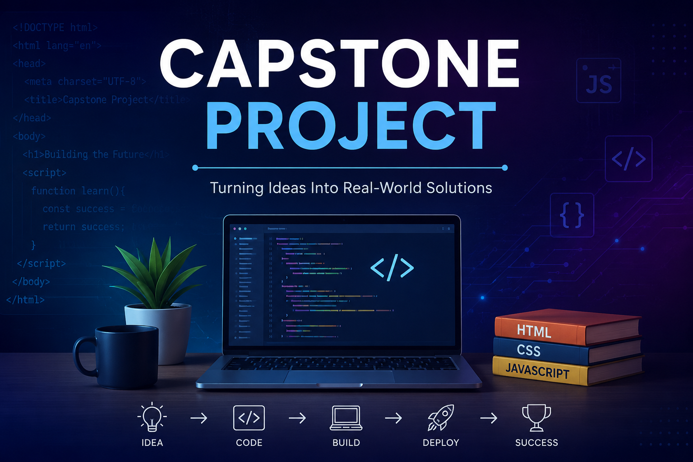
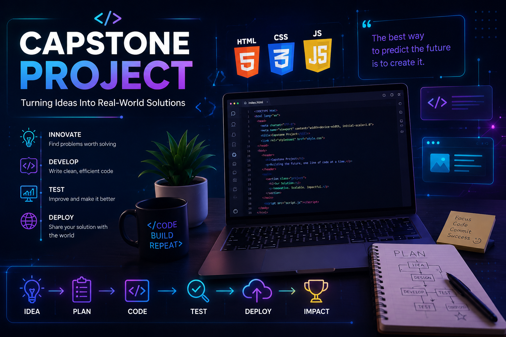
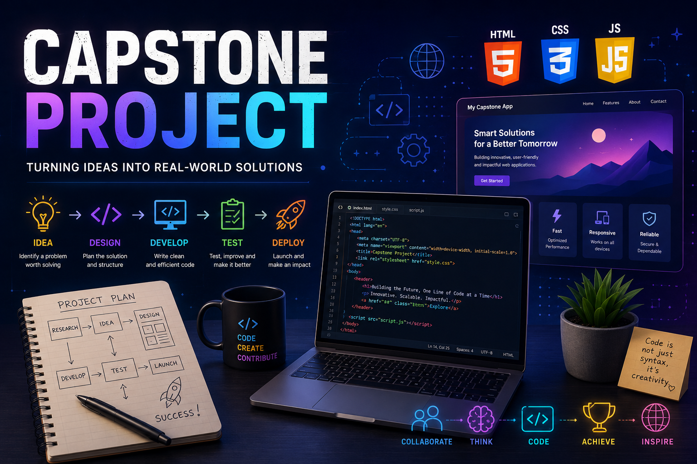

What is a Capstone Project? A capstone project is a final project that brings together all the knowledge and skills learned during a course. It allows students to apply what they have learned to solve a real problem or create a useful product. Why is it called a "Capstone"? The word capstone comes from architecture. A capstone is the top stone placed on a building or arch to complete it. Similarly, a capstone project is the final piece that completes a student's learning journey. Why do we do a Capstone Project? To apply classroom knowledge in a practical way. To improve problem-solving and critical thinking skills. To develop creativity and innovation. To gain experience in planning, designing, and presenting a project. To prepare for higher studies and future careers.
About Our Project Our capstone project is a web application developed using: HTML – Creates the structure of the web page. CSS – Designs and styles the web page. JavaScript – Adds interactivity and dynamic features. What does "Future Innovation" mean? "Future Innovation" represents using technology and creative thinking to develop modern solutions. It symbolizes progress, new ideas, and continuous improvement through digital technology. Why are HTML, CSS, and JavaScript shown on the cover? They represent the three main technologies used to build our project: HTML is the foundation or skeleton of the website. CSS makes the website attractive and responsive. JavaScript makes the website interactive and functional.
Why are there coding symbols and technology graphics? The coding elements represent: Software development Programming Logical thinking Digital innovation Web development Modern technology What does the overall design represent? The modern blue theme, glowing technology elements, and coding graphics symbolize: Innovation Creativity Technology Teamwork Learning Building solutions for the future. About the Creator This Capstone Project was designed and developed by Jaanvi Arunkumar. Age: 11 years Class: VII This project reflects my creativity, problem-solving skills, and interest in web development. Using HTML, CSS, and JavaScript, I explored how technology can be used to create interactive and meaningful digital experiences."Every great innovation begins with a single idea. This project is one small step in my journey of learning, creating, and building for the future." Thank you for taking the time to view my project!